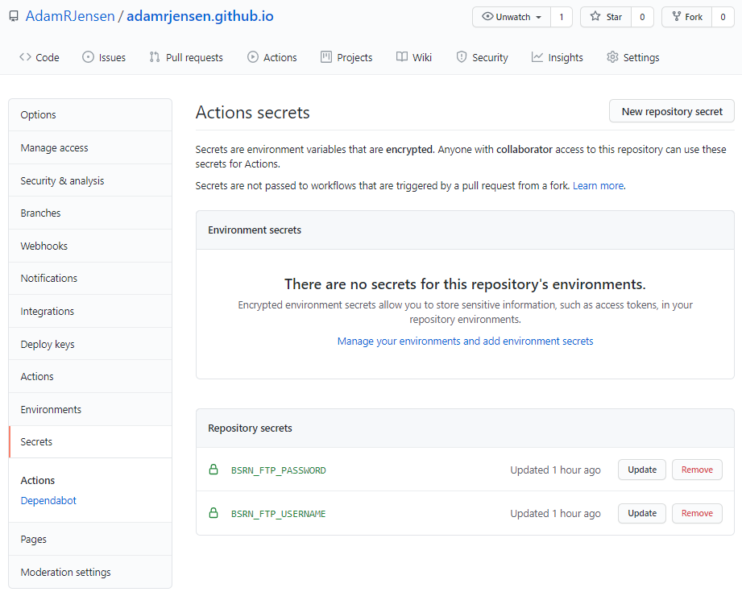

Staying safe on GitHub¶
Hardcoding credentials such as passwords is often tempting but almost always a bad idea. This is especially true if you are hosting your code on services like GitHub for anyone to peruse. But what can you do?
Storing your credentials as environment variables is one method of hiding your credentials while still being easy to use. Each environment variable has a name and an associated value, much like a dictionary. With GitHub, this can be achieved using GitHub Secrets - shhh, don’t tell anyone!
In this blog post, I’ll share an example of an issue I recently encountered of having to use a username and password in a Jupyter Notebook on my blog that is being executed by GitHub Actions.
Github Secrets¶
The first step is to add the credentials to GitHub Secrets in your repository. This is easily done by navigating to the secrets tab in the repository settings menu. New secrets can be added by clicking the “New repository secret” and entering the desired name and corresponding value. In my case I wanted both the username and password to stay hidden, hence I created two secrets.
Here’s what that looked like afterward: 
This step is, however, not sufficient as the variables also have to be called in the workflow’s .yaml file:
# Build the book
- name: Build the site
run: |
export BSRN_FTP_USERNAME=$(BSRN_FTP_USERNAME)
export BSRN_FTP_PASSWORD=$(BSRN_FTP_PASSWORD)
make dirhtml
Using secrets¶
Once the enviroment variables have been set up correctly, they can simply be called in any script like this:
import os
BSRN_USERNAME = os.environ['BSRN_FTP_USERNAME']
BSRN_PASSWORD = os.environ['BSRN_FTP_PASSWORD']
and no one will be the wiser of your passwords!